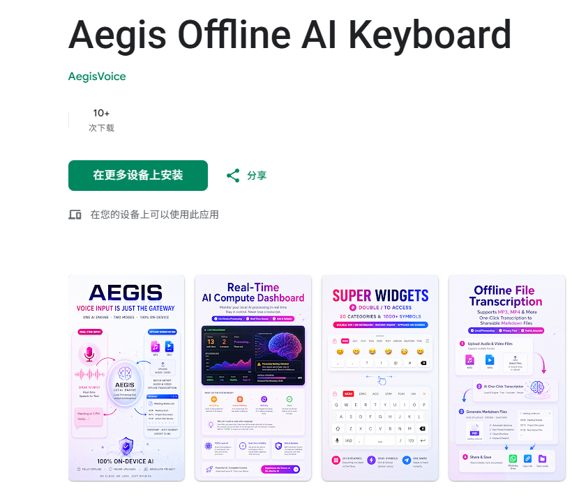
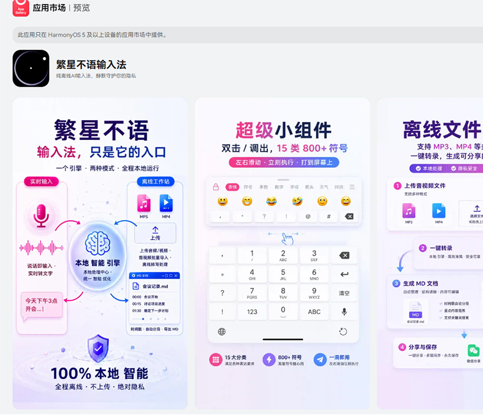

Voice Core：端侧全离线连续语音转写引擎
攻克极限隐私环境下的“不可能三角”
01. 行业困局：端侧算力的“物理魔咒”
在政务、军工、商业机密及高端个人隐私场景中，“语音数据出境（上传云端）”是绝对的安全红线。然而，当我们将语音大模型强制部署在纯本地边缘设备（如智能手机、录音笔）时，行业普遍面临着难以逾越的物理瓶颈：
困境一：长语音导致的 OOM（内存溢出）必崩魔咒。连续输入超长语音会导致端侧声学特征矩阵无限膨胀，常规手机在识别 2~5 分钟后必定发生内存溢出，引发进程强杀或死机。
困境二：速度与精度的物理互斥。要实现实时上屏（低延迟），只能使用轻量级残缺模型，识别极差；要实现高精度纠错，必须调用重度大模型，但推理耗时巨大，导致屏幕长期无视觉反馈，体验断裂。
02. Voice Core 降维架构：重构端侧交互调度
本系统摒弃了传统的单线程识别路径，独创性地提出了“异步双轨并发 + 底层动态 UI 替换”架构，在纯本地零网络状态下，完美实现了“无限时长、极速上屏、极高精度”的共存。
架构核武 1：动态切片与“接力式”内存销毁
系统通过“VAD 语义停顿软切分”与“算力保护硬切分”双重阈值，将无限音频流动态切割。更为核心的是，采用交替接力内存释放策略：前一切片的超大推理缓存，必须等待后一切片定稿上屏后方可彻底销毁。这一机制将极度耗费 RAM 的空间复杂度强行降维至常数级开销，确保设备连续离线录音数小时（最高实测 500 分钟），内存水位线依然恒定如初。
架构核武 2：异步双轨异构调度（CPU 掩护，NPU 狙击）
架构同时向底层硬件并发两套管道：
快轨（流式先锋）：调度 CPU 运行微型声学模型，以毫秒级延迟向屏幕输出“临时草稿”，彻底消灭视觉等待焦虑。
慢轨（重火力后处理）：将高算力 NPU 深度绑定至端侧大模型，在后台执行深层推理。算力解耦不仅大幅降低芯片发热，还孕育出了极具弹性的“算力仪表盘（Compute Dashboard）”：在旗舰机（如骁龙 8Gen3）上实现零延迟实时上屏；而在中低端老旧机型上，系统允许任务在后台列队积压但绝不崩溃（Never Crash），硬件配置只决定处理速度，不决定生死。
架构核武 3：全局时间戳与底层 UI 无感平滑替换
面对快慢双轨的物理时间差，系统在切分音频的瞬间为其打上“全局唯一时间戳”。当慢轨数秒后完成高精度定稿时，底层替换引擎携带该时间戳，精准检索此前“快轨临时草稿”在显示屏幕上的坐标区间。随后调用底层交互 API，将旧草稿静默抹除并覆写新字。利用人眼阅读的时间差，完成了一场华丽的视觉魔术。
架构核武 4：百万级词库矩阵与瀑布流干预
为了达到极致的精准度，我们在底层嵌入了超 100 万词汇的本地基础巨型词典（涵盖通用、科技、法律、商业四大专属领域）。系统在 CPU 内存中执行相邻切片的 FuzzyMatch 去重算法，并辅以“白名单异常打标 → 用户热词强覆盖 → 领域词库定向兜底”的瀑布式干预，彻底压榨出端侧量化模型的极限精度。
03. 商业量产验证：双端 OS 级原生部署 (Show, Don't Tell)
优秀的架构不应只停留在纸面。CHUANIS 实验室已基于此专利协议，完成了主流移动操作系统（Android / HarmonyOS）的原生级别编译与应用商店上架，并在真实商用机型压测中通过了极其严苛的工程级验证。
Aegis Offline AI Keyboard
发布于 Google Play 的硬核旗舰版本（定价 $299 USD）。专为极客与专业级英文办公场景打造。搭载百万级本地英文词库矩阵，提供毫无妥协的纯英文离线高精度转写体验。

GET IT ON GOOGLE PLAY
繁星不语输入法
发布于华为应用市场（AppGallery）的原生鸿蒙应用。深度适配中文语境特征，针对中文极简音节进行特定的 OOV 热词调优，为政企会议与个人记录提供绝对断网的中文智脑引擎。

EXPLORE IN APPGALLERY
04. The Open Source Mission（开源与授权许可）
我们深知，伟大的架构需要接受极客的审视，技术的繁荣更离不开透明与开源。
因此，我们将 Voice Core 的底层工程调度源码（Titan V13 Core）基于 MIT 协议向全球开发者开源。独立开发者可零成本克隆、探究其底层的双轨解密与调度机制。如果您认为编译环境过于繁琐，也欢迎前往应用商店下载开箱即用的量产版本，以支持我们的独立研发。
VIEW SOURCE ON GITHUB对于期望将该架构深度集成至操作系统（OS）底层，或运用其双轨调度机制进行规模化商业封装与变现的硬件巨头及企业客户，本核心架构受专利 CN 122201305 A 严格保护。欢迎通过 Contact 页面联系实验室获取合规的商业级部署授权，构筑您的全离线隐私安全壁垒。